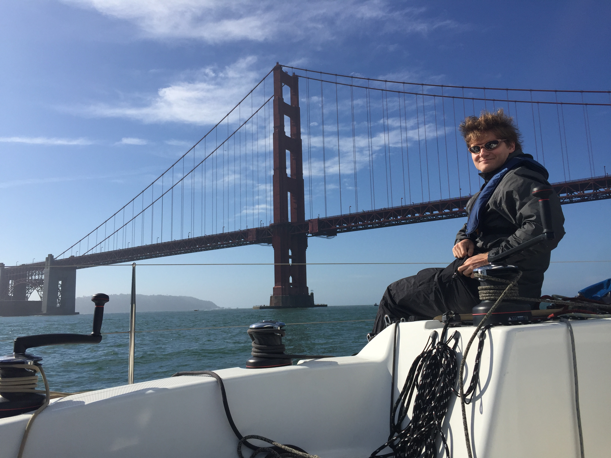
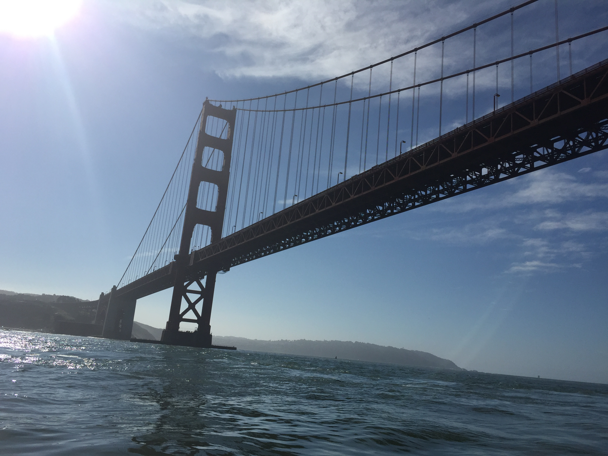
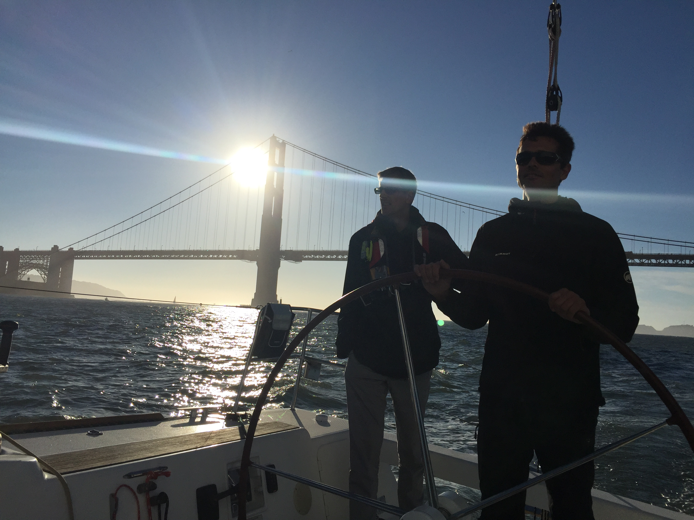
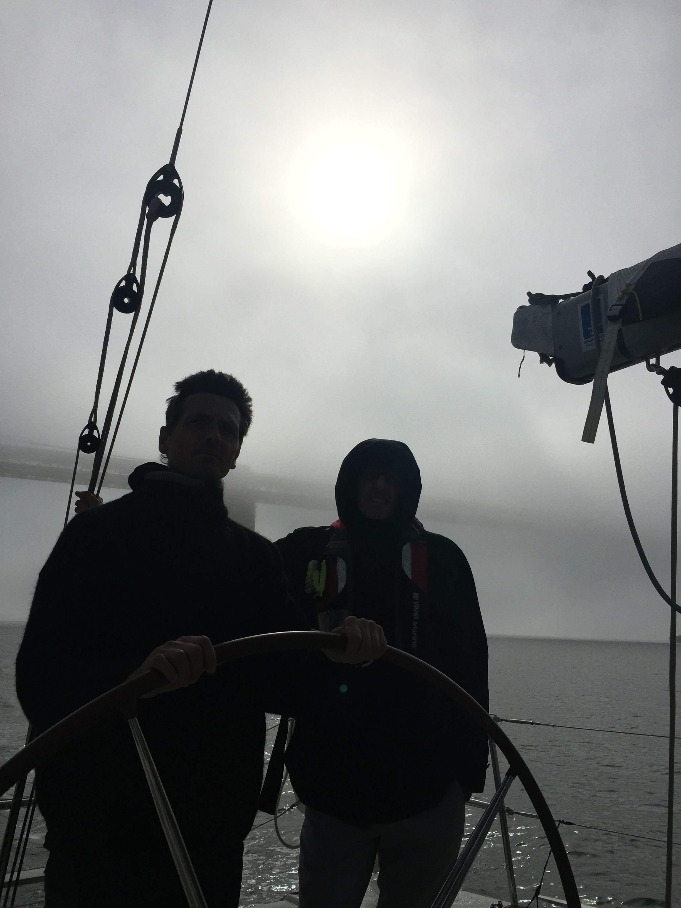

   
{kind=link}
{kind=link}
{kind=link}
{kind=link}
Ilya and I were lucky enough to receive and invitation by Caroline to go sailing with her husband Nicola and his friends Oscar and Frank today on their 40 boat
we left Alameda and motored towards the Golden Gate bridge. The morning fog lifted from around as sun rose above head
the Boat had auto pilot and a really cozy cabin with 3 rooms and a head
the swells were 12 feet high past the golden gate.
realized the importance of turning the stern of the boat towards the incoming swell to ensure it does not get tipped sideways
on the way in, we brought out the Jenniaker, an asymmetrical Spinnaker. It could be past off as a geonna and a spinnaker.
Jibing was very challenging, with 70% of the time messing up the Jenniker
learned the importance of having a single captain on the boat to prevent conflicting orders
Learned the importance of not going up wind with a spinnaker or a jenniker
When sailing past bridges it was important to always cross pillars upwind with lots to avoid accidental jibing as would otherwise if sailing close downwind of pillar
heading into golden gate, currents are strong. Most sail boats were stuck outside waiting for current to flood.
Current was weird on Sausalito side of channel on the inside of the bridge, with whirlpools and constantly changing wind direction. San Francisco side of channel was better. Conditions were normal on the outside of the Golden Gate Bridge and became awkward on the inside of the Golden Gate Bridge
in Europe, leisure boat always gave way to workinb boats.